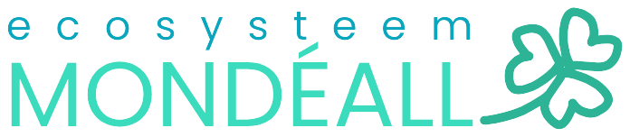
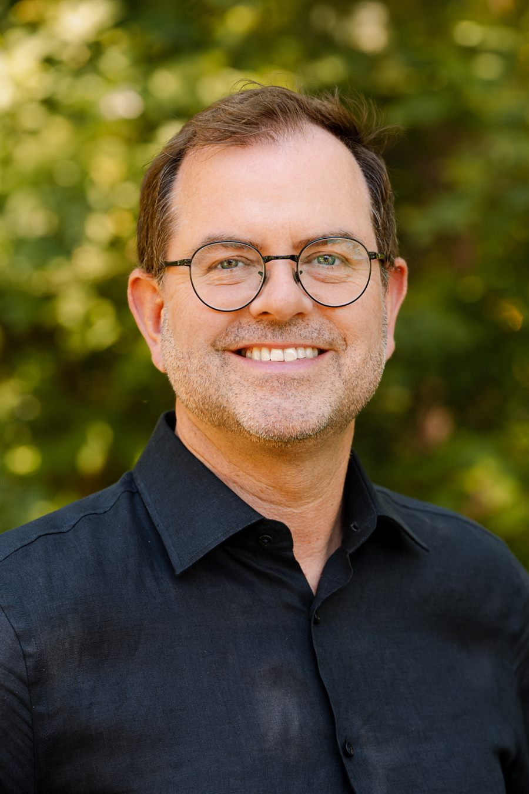
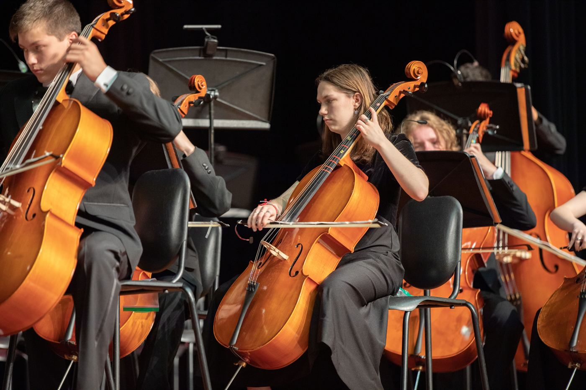
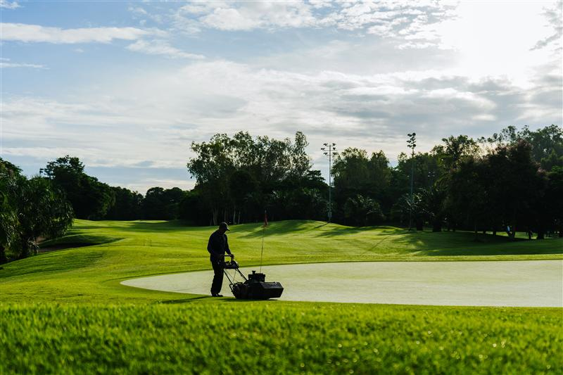
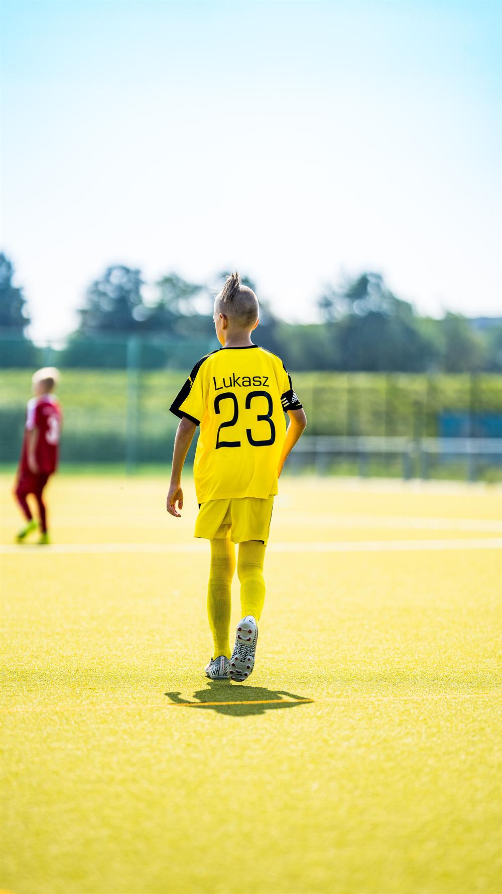
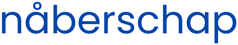
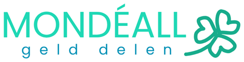
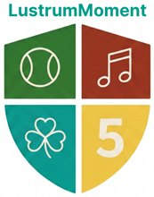

Platform voor volwaardig geld delen
Een persoonlijke vraag aan iedereen die betekenisvol wil bijdragen
Voor familie, vrienden en bekenden. Afgelopen tijd ben ik bezig geweest met het ontwikkelen van een platform waarbij lokaal gegeven kan worden aan verenigingen en stichtingen.
Mondéall bestaat nog niet als werkend platform. Hieronder lees je wat het wordt, hoe ver het nu is en waar ik je hulp bij vraag. Deze pagina staat los van het latere platform.
Mathieu Rensen
Omdat ik wil dat mensen gezien worden

Wie kijkt, ziet. Wie ziet, herkent. Wie herkent, voelt. Wie voelt, handelt. Wie handelt, is.
Dit schreef ik ooit als een gedachte op bij betekenisvol, betrokken en de bedoeling. In het contact tussen overheid en burger. En nu ook bij het idee van geld delen.
Kijken is makkelijk. Zien niet. Je kunt jaren langs het clubhuis fietsen zonder dat het tot je doordringt. Op een dag zie je het. Je herkent iets. Het gaat voelen. Dan pas doe je mee.
Eén euro telt
Bij de meeste platforms gaat er per bijdrage een vast bedrag af. Bij €1,00 blijft er dan minder over. Of je betaalt vrijwillig extra zodat de euro alsnog aankomt. Maar ook een ‘tientje’ kan betekenisvol zijn voor wie minder heeft. Ik betrek daarom lokale ondernemers die willen bijdragen aan het platform en de uitvoering. Zij maken ’t mogelijk dat geld delen niets kost.
Vertrouwen bouw je, je belooft het niet
Ik herken dat mensen goedwillend zijn. Maar die goedwil ontwaakt pas bij vertrouwen. Je geeft als je weet dat het aankomt en ziet dat het klopt. Een belofte klinkt als marketing. Het moet in de constructie zitten. Daarom houd ik geldstromen strikt gescheiden. Daarom zit ik zelf niet in het bestuur van de vermogensstichting in oprichting. En daarom is het plan dat ik uiteindelijk ook uit het bestuur van Stichting Mondéall stap, de stichting die het platform uitvoert. Dan ligt de zeggenschap niet meer bij mij.
Dichtbij
Oftewel noaberschap in het oosten. Buren die elkaar niet laten vallen. Geen loket, geen formulier. Nooit in de plaats van de overheid. Wel ernaast, daar waar een regeling net niet komt.
Wat nog niet af is
Eerlijk is eerlijk: er is veel ontworpen maar nog niet zichtbaar. Er draait nog geen enkel Initiatief. Het gedicht zegt zelf waar het om gaat: wie handelt, is. Dus de volgende stap is klein. Eén vereniging. Eén voorziening. Eén inwoner die een euro deelt.
Wil je meekijken of meedenken? Dan hoor ik het graag.
Rijk genoeg, en toch
Nederland is een rijk land. Huishoudens gaven in 2024 samen ruim €2,35 miljard aan goede doelen: gemiddeld €415 per gevend huishouden, en 76% van de huishoudens gaf geld of goederen. Nalatenschappen leverden dat jaar minstens €512 miljoen op, een stijging van 13% ten opzichte van 2022 (Bekkers, Koolen-Maas & Schuyt, Geven in Nederland 2026, Centrum voor Filantropische Studies, Vrije Universiteit Amsterdam). Er is, in het groot, geen tekort.
En toch:
- kan niet ieder kind mee op schoolkamp;
- moet een sportvereniging de verouderde douches of kleedkamers nog een jaar aanhouden;
- staat er in de ene wijk een nieuwe speeltuin en in de andere al tien jaar niets;
- zijn er mensen die er simpelweg niet bij horen, omdat meedoen geld kost dat ze niet hebben.
Het probleem is dus niet schaarste. Het probleem is dat geld en behoefte elkaar niet vinden. Geld zit vast in structuren; goede initiatieven vinden geen financiering. Dat is wat Mondéall wil oplossen.
Maatschappelijk initiatief
Waarom lost niemand dit al op? Omdat de systemen die we hebben, hier niet voor gebouwd zijn.
De socioloog Theo Schuyt (VU Amsterdam) beschrijft dat een samenleving vier systemen kent om voor elkaar te zorgen:
- Familie en naasten: het basissysteem waarbij dierbaren je helpen en ondersteunen als dat nodig is. Wie geluk heeft, heeft mensen om zich heen, maar niet iedereen heeft dat.
- De overheid: belasting, subsidie, zorg. Rechtvaardig en onmisbaar, maar noodzakelijk onpersoonlijk: gebonden aan regels, aan politiek en aan wat verantwoord kan worden. Budgetten hebben een grens en dat betekent keuzes maken voor terreinen waar wel en geld naartoe gaat.
- De markt: gestuurd door vraag en aanbod. Je verdient een inkomen door te werken en koopt wat je nodig hebt. Bij commercie past belangeloos geven niet.
- Maatschappelijke initiatieven: wat mensen vrijwillig voor elkaar overhebben. Denk aan vrijwilligers, verenigingen en stichtingen, huishoudens die geven en bedrijven die sponsoren. In de praktijk draait dit filantropische systeem op gewone huishoudens en geven lokale ondernemers.
Dat vierde systeem hadden we in Nederland altijd al. We hebben altijd ruimhartig gegeven en hebben het altijd zelf geregeld. Maatschappelijke initiatieven vullen aan daar waar de andere systemen dat niet kunnen. Dit vierde systeem realiseert wat mensen zelf belangrijk vinden. Het biedt ruimte voor maatwerk, voor snelheid en voor lokale verschillen.
Alleen: ook maatschappelijke initiatieven zijn onpersoonlijk geworden. Tussen de mens die wil geven en het initiatief dat steun nodig heeft, staan nu vaak partijen die een deel afromen, doelen die om aandacht concurreren en gegevens die worden verzameld. Geven is een transactie geworden.
Mondéall is geen nieuw systeem. Het is een instrument binnen dit vierde systeem. Mondéall wil maatschappelijke initiatieven weer dichter bij mensen zelf brengen: rechtstreeks, en zonder dat er iets van een bijdrage wordt afgeroomd.
Mondéall kiest geen kant. Het enige criterium is of iets de buurt echt vooruithelpt.
Schuyt zelf vat het zo samen: “Heel kort geformuleerd kent elke samenleving ideaaltypisch vier systemen voor mensen om te leven en te kunnen overleven: 1. een familiesysteem; 2. een overheidssysteem; 3. een marktsysteem en 4. een filantropisch systeem.” (Theo Schuyt, afscheidsrede Aandacht voor vermaatschappelijking, Vrije Universiteit Amsterdam, 26 juni 2026.)
We moeten het zelf doen, net als vroeger
Er was een tijd dat geven vanzelf ging. Je zag je buurman, je herkende wat hij nodig had, en je hielp. Geen formulier, geen platform, geen percentage: een hand, een gulden in het mandje, een middag meewerken.
In het oosten van het land heet dat noaberschap: buren die elkaar bijstaan, niet uit liefdadigheid maar omdat het vanzelfsprekend is. Geen loketten, geen aanvraagprocedure. Nabijheid, wederkerigheid, en de stille afspraak dat je elkaar niet laat vallen.
Die reflex is niet verdwenen. Hij is bedolven geraakt. Mondéall wil hem weer ruimte geven, met de middelen van nu maar met de vanzelfsprekendheid van toen.
Dit is geen nostalgie. Het is de constatering dat sommige dingen alleen werken als we ze zelf het initiatief nemen.
Wat Mondéall wordt
Mondéall wordt een online platform waarop geld wordt gedeeld voor lokale initiatieven. Een vereniging, een stichting, een school of een kerk plaatst online een Initiatief voor iets concreets. Mensen delen mee vanaf €1.
Denk aan:
- een set instrumenten voor de jeugdafdeling van de muziekvereniging;
- een aanhanger voor de vrijwilligers die het sportpark onderhouden;
- fruit op school, elke week, het hele jaar;
- een clubhuis dat een verflaag en nieuwe kozijnen nodig heeft;
- een schoolkamp waar elk kind mee kan.



Het bijzondere: honderd procent komt aan
Ken je dat? Je wilt €15 geven aan een goed doel en tijdens het betalen verschijnt de vraag of je ook wilt bijdragen aan de kosten. Vink je “ja” aan, dan geef je opeens €21 of €26, zonder dat helder is hoeveel daarvan bij het doel zelf terechtkomt. Bij Mondéall komt die vraag niet. Wat je deelt, komt aan. Geen commissie en geen percentage dat blijft hangen. Bij Initiatieven ook geen streefbedrag, geen druk, geen dataverkoop. Wie deelt, hoeft niets achter te laten wat hij niet wil. Dataminimalistisch en respect voor privacy.
Een euro blijft een euro
Reken het eens na. Je wilt één euro delen met de muziekvereniging in je dorp. Bij veel platforms gaat er per bijdrage een vast bedrag af voor de verwerking, soms plus een percentage. Dat vaste bedrag is niet groot, maar bij een bijdrage van één euro telt het zwaar.
Daarom werkt “delen vanaf één euro” bij veel platforms niet echt. Bij sommige blijft er van die euro weinig over, andere staan zo’n kleine bijdrage niet eens toe. Het model is gebouwd op grotere bedragen.
Bij Mondéall blijft een euro een euro. Niet omdat wij zuiniger zijn, maar omdat er iemand anders betaalt: de lokale ondernemers, mkb’ers en familiebedrijven uit de buurt, die als Sponsor de kosten van het platform gaan dragen, inclusief de kosten van elke transactie. Daardoor hoeft er van jouw bijdrage niets af.
Dat is precies waarom het bedrag er niet toe doet. Een bijdrage wordt niet betekenisvol door de grootte, maar doordat iemand ziet wat er nodig is en handelt. Een model waarin één euro verdampt, sluit die mensen uit. Een model waarin één euro heel aankomt, laat iedereen meedoen.
Die ondernemers zijn niet een logo in de kantlijn. Zij zijn de reden dat dit model kan bestaan. Zonder Sponsors geen gratis meedelen en dus geen Mondéall. Ken je een ondernemer die hier goed bij past? Dat gesprek komt eraan zodra het platform klaarstaat.
Waar we nu staan
Mondéall bestaat nog niet als werkend platform. Wat er wel al ligt:
- Het fundament staat op papier: missie, waarden, de juridische en fiscale opzet. De verdere uitwerking met een belastingadviseur en een jurist moet de komende tijd nog gebeuren.

Stichting Naberschap is in oprichting: een ANBI-stichting die op langere termijn vermogen opbouwt en zelfstandig besteedt. Ikzelf zal geen deel uitmaken van het bestuur. Een conceptversie van de website staat al online: www.naberschap.nl.
Stichting Mondéall, die het platform gaat uitvoeren, moet nog bij de notaris worden opgericht. De website www.mondeall.eu geeft een indruk van hoe het platform eruit komt te zien. Ik ben hier uitvoerder en bestuurder en stap er uiteindelijk uit. Zo kan het platform nooit van mij worden en blijft de missie voorop staan.
Eenmanszaak LustrumMoment: zodat sport- en muziekverenigingen extra geld kunnen ophalen tijdens een lustrum. Helemaal volgens de fiscale regels. De website www.lustrummoment.nl staat inmiddels live.- De eerste pilots zijn in de Achterhoek en omgeving.
Fonds op Naam
Iedereen kan een eigen Fonds op Naam starten bij Stichting Naberschap. Zo'n fonds keert jaarlijks rendement uit. Jij geeft advies waar dat rendement naartoe gaat. Een Fonds op Naam krijgt vermogen door giften of door nalatenschappen. Zo krijgen die lokale goede doelen en die projecten die je belangrijk vindt jaarlijks geld.
Volwaardig geld delen betekent bij Mondéall
- Missiegedreven: het vermogen blijft aan het doel verbonden, ook als bestuurders wisselen.
- Dataminimalistisch en met onafhankelijke systemen: niet vast aan één leverancier, en data in een open formaat.
- Geen reclame en geen doorverkoop van persoonsgegevens.
- Privacy voorop: geen advertentietracking en geen profielen van wie meedeelt.
- Anoniem geld delen, al vanaf één euro.
- Een Initiatief starten is kosteloos.
Waar ik je hulp bij vraag
Ik richt niet één organisatie op, maar meerdere: een stichting die het platform straks uitvoert en een aparte stichting die het vermogen en de missie op de lange termijn bewaakt. Elke rechtsvorm kent eigen fiscale spelregels die vooraf grondig moeten worden uitgezocht. Niet omdat ik het zelf ingewikkeld wil maken, maar omdat het straks om geld van anderen gaat en dat verdient grote zorgvuldigheid.
Dat betekent in de praktijk: een notaris die hierin gespecialiseerd is (niet de notaris om de hoek), fiscaal advies per entiteit en straks meerdere aparte administraties. Meer uitzoekwerk, meer tijd, meer kosten dan bij een gewone start. Niet onmogelijk, wel meer.
Ik heb nu al wat kosten. Dat betaal ik zelf. Om verder te ontwikkelen, een werkend platform te krijgen en een correcte juridische structuur zou het mooi zijn als er extra geld is.
Het oprichten van twee stichtingen is kostbaar. Daarnaast is fiscaal en juridisch advies nodig. Daar hoort ook een (jaarlijkse) administratie bij. Daarnaast heb ik gebruikelijke bedrijfskosten zoals (maandelijkse) bank- en verzekeringskosten, hostingkosten en kosten voor het platform.
Daar vraag ik je nu voor. Geen enorm bedrag, maar wel genoeg mensen die zeggen: ik geloof hierin, hier heb je wat. Een streefbedrag noem ik bewust niet. Geen druk: wat telt, is of je meedoet, niet met hoeveel. Dat is voor mij betekenisvol.
Wat er niet met jouw bijdrage gebeurt
Eerlijk is eerlijk, dus dit staat er gewoon:
- Je bijdrage komt rechtstreeks bij mij privé terecht, niet bij Stichting Mondéall of Stichting Naberschap. Die bestaan nog niet, of mogen dit geld niet ontvangen.
- Het is niet fiscaal aftrekbaar. Het is geen gift aan een goed doel of ANBI.
- Er staat niets tegenover: geen aandeel, geen rendement, geen tegenprestatie.
- Dit is iets anders dan het platform zelf. Zodra Mondéall draait, gaat elke bijdrage aan een Initiatief voor honderd procent rechtstreeks naar de vereniging of stichting, nooit naar mij en nooit naar de stichting achter het platform. Die belofte geldt straks. Wat je nu bijdraagt komt rechtstreeks bij mij privé terecht, als tegemoetkoming in de opstartkosten, zonder platform, entiteit of belofte ertussen.
Zo draag je bij
Er is geen streefbedrag en geen haast. Geven doe je op basis van vertrouwen, en zelfs een euro kan betekenisvol zijn. Bijdragen kan met Tikkie: ga naar de bijdragepagina en kies zelf het bedrag.
De knop leidt naar www.gelddelen.nl/steun. Daar staat de actuele Tikkie-link, met QR-code om onderweg mee te betalen. Voor een groter bedrag kun je gewoon een tweede Tikkie-verzoek sturen.
Ken je iemand die kan helpen?
Niet alleen geld helpt. Ik bouw ook aan een netwerk van mensen en bedrijven die willen meedenken, meedoen of meehelpen.
Wil je zelf een rol spelen? Of ken je iemand in jouw omgeving, een vriend, een kennis, een ondernemer, die dit ook zou willen? Laat het me weten via mathieu.rensen@outlook.com of geef dit mailadres. Je kunt deze website natuurlijk ook delen.
Op de hoogte blijven
Wil je horen hoe het verdergaat met de oprichting van Stichting Mondéall, de start van de pilot, het eerste Initiatief dat live gaat? Laat het me weten, dan houd ik je op de hoogte.
Mail naar mathieu.rensen@outlook.com. Of volg me op LinkedIn.